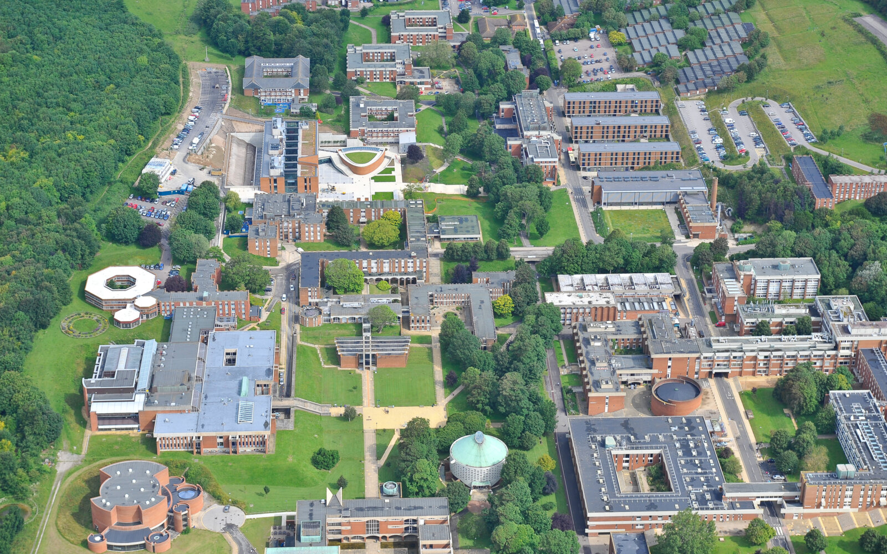
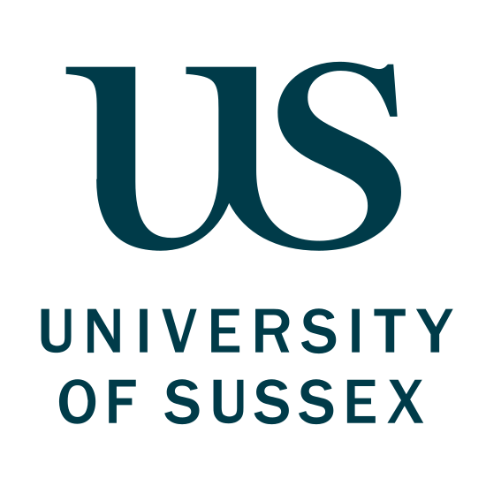

16th Southern and Midlands Logic Seminar, Brighton, University of Sussex
The sixteenth meeting of the Southern and Midlands Logic Seminar (SMLS) will be held on the afternoon of Friday 25th September 2026 at the University of Sussex in Brighton.
Participation in SMLS is free to all, but please contact Giulio Guerrieri if you intend to participate, to help us plan practical arrangements.

Participants are encouraged to join the SMLS community on Slack, which is used for announcements and coordination. Please contact one of the SMLS organisers to be added.
The meeting is supported by a London Mathematical Society Joint Research Groups grant, and by the School of Engineering and Informatics of the University of Sussex.
Programme: Friday 25th September 2026
- 12:00–13:00 Lunch buffet.
- 13:00–14:00 TBA (). TBA.
- 14:00–14:30 Coffee and discussion.
- 14:30–15:00 Vitek Jelinek (University of Sussex). TBA.
- 15:00–15:30 Adriana Baldacchino (University of Birmingham). TBA.
- 15:30–16:00 TBA (University College London). TBA.
- 15:45–16:15 Coffee and discussion.
- 16:30–17:30 TBA (). TBA.
Venue
The meeting will take place in Lecture Theatre 1 at Chichester 1 building (BN1 9QJ), on the campus of the University of Sussex, in Falmer, Brighton and Hove. For a map of the campus, see here.
How the reach the campus of the University of Sussex from Brighton?
- By train:
The nearest train station to the campus is Falmer (approx 10 minutes’ walk from Chichester 1 building) and the train takes less than 10 minutes from Brighton station.
Trains run regularly during the day (about every 15 minutes) and the last train leaves Falmer at 00:25 for Brighton. See National Rail for further information.
From Falmer train station, follow signs to University of Sussex – walk under the underpass and follow the footpath until you reach a zebra crossing. In front of you there is Falmer House building, and you're almost done! Turn right towards Sussex House building and then turn left to Chichester 1 building. Refer to the map. - By bus: The Number 25 bus brings you from central Brighton all the way to University of Sussex campus. Alight at the ‘North-South, University of Sussex’ bus stop and you will see Chichester 1 building in front of you. A descending stairway leads you from the bus stop to the front doors of the building. Refer to the map.
Travel bursaries
Each meeting has a small budget to cover travel costs for speakers and participants. Priority will be given to young researchers, particularly PhD students. We are also able to provide some support for participants with caring or parenting responsibilities. Anyone who requires support should contact Thomas Powell in advance of the meeting.
Abstracts
TBA. TBA, University of Nowhere.
TBA. Vitek Jelinek, University of Sussex.
TBA. Adriana Baldacchino, University of Birmingham.
SMLS Organisers
- Anupam Das (Birmingham)
- Thomas Powell (Bath)
- Fredrik Dahlqvist (Queen Mary)
- Giulio Guerrieri (Sussex)
- Fabio Zanasi (UCL)
Local Organisers for the Meeting
- Giulio Guerrieri. If you intend to attend the meeting, please write to g.guerrieri@sussex.ac.uk.

